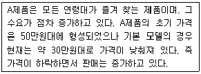
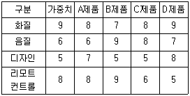
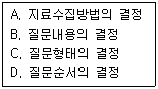
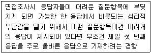
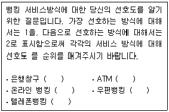
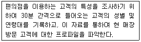
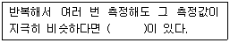
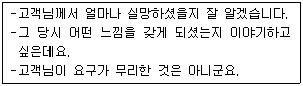

텔레마케팅관리사 (2010-03-07 기출문제)
1과목: 판매관리
1. 아웃바운드 텔레마케팅의 효과적인 전개를 위한 핵심적 요소와 가장 거리가 먼 것은?
- 명확한 대상고객의 데이터
- 유능한 텔레마케터
- 최신 인기상품의 준비
- 스크립트
(정답률: 65%)

2. 다음 중 아웃바운드 텔레마케팅에 관한 설명으로 틀린 것은?
- 명확한 고개 데이터베이스를 갖추어 제품이나 서비스를 적극적으로 판매하는 마케팅이다.
- 아웃바운드 텔레마케팅에서는 Q&A보다는 스크립트의 활용도가 높다.
- 업체주도형으로 이뤄지는 능동적, 목표지향적인 마케팅이다.
- 고객이 제품, 서비스에 대해 관심을 가지고 전화를 거는 고객 주도형이다.
(정답률: 81%)
3. 다음은 제품의 어떤 가격정책을 설명하는 것인가?

- 가격 탄력성(price elasticity)
- 시장침투 가격(penetration pricing)
- 명예 가격(prestige pricing)
- 초기 고가격(skimming pricing)
(정답률: 34%)
4. 효과적인 시장세분화의 조건으로 틀린 것은?
- 세분시장은 정보의 측정 및 획득이 용이해야 한다.
- 세분시장에 효과적으로 접근할 수 있는 적절한 수단이 존재해야한다.
- 세분시장 사이에 차별적인 반응(differentiability)이 나오지 않도록 주의해야 한다.
- 각 세분시장은 기업이 개별적인 마케팅 프로그램을 실행할 수 있을 정도로 충분한 규모를 지니고 있어야한다.
(정답률: 53%)
5. 일반적인 제품의 도입, 브랜드 인지의 창출, 인적판매 활동의 준비, 시험이용의 장려가 커뮤니케이션 목표로 설정되는 제품수명주기 단계는?
- 도입기
- 성장기
- 성숙기
- 쇠퇴기
(정답률: 82%)
6. 아웃바운드 텔레마케팅의 전용상품을 개발할 경우 고려해야 할 사항이 아닌 것은?
- 신뢰성
- 사후 관리성
- 상담의 효율성
- 거래조건 변동의 최대화
(정답률: 62%)
7. 소비자를 사회계층, 라이프스타일 또는 개성과 관련된 특징을 근거로 서로 다른 세분화 시장으로 구분하는 것은?
- 인구통계학적 세분화(demographic segments)
- 지리적 세분화(geographic segments)
- 심리묘사적 세분화(psychographic segments)
- 비차별적 세분화(undifferentiated segments)
(정답률: 70%)
8. 단일 브랜드에 대한 호의적인 태도와 지속적인 구매를 보이는 소비자의 행동은 무엇인가?
- 브랜드 차별(brand discrimination)
- 행위적 학습(behavioral learning)
- 선별적 인식(selective perception)
- 브랜드 충성도(brand loyalty)
(정답률: 88%)
9. 인바운드 텔레마케팅 업무 시 주의사항이 아닌 것은?
- 고객에게 최선을 다한다는 서비스 정신을 갖추어야한다.
- 제품이나 서비스에 대한 전문지식은 필요로 하지 않는다.
- 고객의 불만원인을 정확히 파악한다.
- 전문적인 응대기법과 응대자세를 갖추어야 한다.
(정답률: 70%)
10. 항공사에서는 승객들이 동일 항공사를 반복해서 이용하도록 장려하기 위해 사용고객프로그램을 개발하였다. 이러한 세분화 기법은 다음 중 어떤 측면에 초점을 맞춘 것인가?
- 탐색 효익
- 사용률
- 구매의도
- 제품인지
(정답률: 70%)
11. 포지셔닝 전략을 개발하기 위한 기업내부의 분석정보가 아닌 것은?
- 시장점유율
- 기술상의 노하우
- 성장률
- 인적자원
(정답률: 50%)
12. 고객이 기업과 브랜드를 만날 수 있는 모든 접점을 통해 일관적이고, 설득력 있는 메시지를 전달하기 위한 전략은?
- 통합 마케팅 커뮤니케이션(IMC ; Integrated Marketing Communication) 전략
- 통합 마케팅(IM ; Integrated Marketing) 전략
- 통합 광고(ISM ; Integrated Advertising) 전략
- 통합 판매 믹스(ISM ; Integrated Sales Mix) 전략
(정답률: 72%)
13. 데이터베이스를 구성하는 고객정보의 원천에 관한 설명으로 틀린 것은?
- 내부고객 정보 - 회사내부에 이미 보유하고 있는 정보
- 반응고객 정보- 판매를 목적으로 전문 업체에 의해 만들어진 정보
- 외부고객 정보 - 현재까지 기업과 별다른 관계를 가지고 있지 않는 고객정보
- 타 기업의 고객정보 - 다른 기업이 보유한 고객정보
(정답률: 79%)
14. 생산자가 광고와 인적판매를 이용하여 판매를 촉진하며, 소수의 판매점으로 선택적인 유통을 하는 소비재의 유형은?
- 편의품
- 전문품
- 선매품
- 비탐색품
(정답률: 39%)
15. 다음 중 상대적인 고가전략이 가장 적합한 경우는?
- 시장에서 경쟁자의 수가 많을 것으로 예상 될 때
- 소비자의 수요를 자극하고자 할 때
- 높은 품질로 새로운 소비자 층을 유인하고자 할 때
- 시장의 가격탄력성이 높을 때
(정답률: 77%)
16. 여러 점포를 모두 특정지역에 집중하여 입지시키는 방법으로 대개 대형 상권이나 교통중심지를 대상으로 하는 마케팅은?
- 경쟁적 군집화
- 포화마케팅
- 프랜차이징
- 다경로 유통시스템
(정답률: 32%)
17. 다음 중 데이터베이스(database) 마케팅에 관한 설명으로 옳은 것은?
- PC만을 이용하여 표준화된 제품으로 불특정 다수의 고객에 접근하는 마케팅이다.
- 대중매체를 통하여 전국적으로 대중에게 자사의 상표 인지도를 높게 유지하는 것이다.
- database 마케팅은 VIP고객 리스트만을 이용한 마케팅 기법이다.
- database 마케팅에서 database는 고객의 개인별 특성을 담고 있어야 한다.
(정답률: 73%)
18. STP전략의 절차를 바르게 나열한 것은?
- 표적시장 선정 → 시장세분화 → 포지셔닝
- 시장세분화 → 표적시장 선정 → 포지셔닝
- 포지셔닝 → 표적시장 선정 → 시장세분화
- 시장세분화 → 포지셔닝 → 표적시장 선정
(정답률: 65%)
19. 소비자가 구입하고자 하는 TV를 아래와 같이 평가했을 때의 설명으로 옳은 것은?

- 보완적 접근법으로 TV를 선택하면 A제품을 선택하게 된다.
- 사전편집식 접근법으로 TV를 선택하면 B제품을 선택하게 된다.
- 사전편집식 접근법으로 TV를 선택하면 C제품을 선택하게 된다.
- 보완적 접근법으로 TV를 선택하면 D제품을 선택하게 된다.
(정답률: 20%)
20. 서비스의 특성 중 이질성을 해소하기 위한 전략으로 가장 적합 것은?
- 비차별화 전략
- 집중화전략
- 차별화전략
- 대형화전략
(정답률: 44%)
21. 고객의 행동별에 따른 단계 중 구매가능자 중에서 자사의 제품서비스에 대하여 필요성을 느끼지 못하거나, 구매할 능력이 없다고 확실하게 판단되는 자는?
- 비자격잠재자
- 최초구매자
- 구매용의자
- 구매가능자
(정답률: 59%)
22. 마케팅 정보시스템의 특징과 가장 거리가 먼 것은?
- 지속적인 운영시스템이다.
- 미래지향적인 예측시스템이다.
- 자동화, 정형화가 쉽다.
- 불필요한 정보에 의해 비능률을 초래할 가능성이 높다.
(정답률: 29%)
23. 제품/시장 확장 그리드(Product/ Market Expansion Grid)에 관한 설명으로 틀린 것은?
- 제품개발(Product development)은 기존시장을 대상으로 수정된, 혹은 새로운 제품을 제공하는 것이다.
- 다각화(Diversification)는 기존제품과 시존시장 밖에서 새로운 사업을 시작하거나 매입하는 것이다.
- 시장개발(Market development)은 시장을 개발하여 기존제품을 판매하는 것이다.
- 시장침투(Market penetration)는 기존제품을 변경하여 신규고객에게 더 많이 판매하는 것이다.
(정답률: 62%)
24. 표적시장을 선택 할 때 전개하는 전략과 가장 거리가 먼 것은?
- 집중화 마케팅
- 차별화 마케팅
- 매크로 마케팅
- 비차별화 마케팅
(정답률: 30%)
25. 고객 욕구의 차이점보다는 공통점을 맞추는 마케팅 전략은?
- 대량 마케팅(mass marketing)
- 차별적 마케팅(differentiated marketing)
- 집중적 마케팅(concentrated marketing)
- 지역 마케팅(local marketing)
(정답률: 47%)
2과목: 시장조사
26. 시장조사 결과보고서의 작성 목적과 가장 거리가 먼 것은?
- 조사자와 조사대상자 간의 의사소통
- 통제수단
- 타당성 검증
- 결과활용
(정답률: 75%)
27. 표본조사와 전수조사에 관한 설명으로 가장 적합한 것은?
- 모집단내에 대상자의 수가 너무 많을 경우 표본조사를 한다.
- 전수조사가 표본조사보다 항상 오류가 없으나 비용이 많이 들어서 표본조사를 한다.
- 마케팅 부서는 항상 전수조사를 선호한다.
- 표본조사는 조사결과에 심각한 오류가 많아 기피된다.
(정답률: 65%)
28. 획득하고자 하는 정보의 내용을 대략 결정한 이후 이뤄져야 할 질문지 작성과정을 바르게 나열한 것은?

- A → B → C → D
- B → C → D → A
- B → D → C → A
- C → A → B → D
(정답률: 60%)
29. 정성적인 조사와 비교했을 때 정략적인 조사의 단점은?
- 조사의 결론이 분석가마다 다를 수 있다.
- 심도 있는 답을 얻기가 어렵다
- 결과를 요약하기가 어렵다.
- 응답자에게 신속한 답을 얻기가 어렵다.
(정답률: 43%)
30. 시장조사를 위한 면접조사의 특성으로 틀린 것은?
- 커뮤니케이션에 전문능력을 가진 진행자의 역할이 중요하다.
- 형식적이고 정형화된 절차를 통해 정보를 수집한다.
- 여유를 갖고 깊고 풍부한 정보를 수집할 수 있다.
- 마케팅 조사에서 그 활용 빈도가 높아지고 있다.
(정답률: 60%)
31. 다음 중 비확률표집의 장점이 아닌 것은?
- 모집단을 정확하게 규정 지을 수 없는 경우에 유용하다.
- 개별요소의 추출확률을 동일하게 해야 할 경우 유용하다.
- 표본의 크기가 작은 경우에 유용하다.
- 표집오차의 큰 문제가 되지 않을 경우 유용하다.
(정답률: 58%)
32. 관찰조사에 대한 설명으로 옳은 것은?
- 가장 기본적인 시장조사 방법으로 공개되어 있는 자료에서 필요한 정보만을 얻는다.
- 시각적으로 알 수 있는 내용만 수집하는 방법이다.
- 직접 조사대상자를 방문 또는 전화를 해서 조사하는 방법이다.
- 정부나 일반 연구기관에서 경제활동을 조사할 때 주로 쓰이는 방법이다.
(정답률: 34%)
33. 다음은 무엇에 관한 설명인가?

- 후광효과(halo effect)
- 1차 정보 효과(primacy effect)
- 동조효과(acquiescence effect)
- 최근정보 효과(recency effect)
(정답률: 34%)
34. 다음 문항의 측정 수준은?

- 비율수준의 측정
- 등간수준의 측정
- 명목수준의 측정
- 서열수준의 측정
(정답률: 50%)
35. 질문지의 질문순서의 결정에 관한 설명으로 틀린 것은?
- 첫 번째 질문은 가능한 한 쉽게 응답할 수 있고 흥미를 유발할 수 있는 것이어야 한다.
- 응답자의 인적사항에 대한 질문은 가능한 한 앞부분에 위치하도록 하여야 한다.
- 응답자가 심각하게 고려하여 응답하여야 하는 성질의 질문은 위치선정에 주의하여야 한다.
- 문항이 담고 있는 내용의 범위가 넓은 것에서부터 점차 좁아지도록 문항을 배열하는 것이 좋다.
(정답률: 50%)
36. 다음 중 가설의 특성에 대한 설명으로 틀린 것은?
- 문제해결의 기능이 있어야 한다.
- 확률적 속성을 갖는다.
- 경험적 검증이 가능해야 한다.
- 추상적 개념을 포함해야 한다.
(정답률: 44%)
37. 다음 중 1차 및 2차 자료의 설명으로 틀린 것은?
- 1차 자료는 조사자가 직접 수집한 정보를 말한다.
- 1차 자료는 시간과 비용이 많이 드는 단점이 있다.
- 2차 자료는 1차 자료에 비해 적합성, 신뢰성, 정확성, 시효성이 우수하다.
- 2차 자료는 다른 조사자나 조사기관이 수집하여 공개한 자료이다.
(정답률: 71%)
38. 다음 중 면접자 선정 시 고려해야 할 사항과 가장 거리가 먼 것은?
- 응답자에 접근 용이도
- 면접 목적
- 질문 내용
- 면접의 수행경제력
(정답률: 74%)
39. 우편조사의 응답률에 영향을 미치는 요인과 가장 거리가 먼 것은?
- 연구주관 기관 및 지원단체의 성격
- 응답집단의 동질성
- 응답자의 지역적 범위
- 질문지의 양식 및 우송방법
(정답률: 40%)
40. 자료의 신뢰성을 확보하기 위한 방법과 가장 거리가 먼 것은?
- 측정항목을 늘린다.
- 설문지의 모호성을 제거한다.
- 동일한 질문이나 유사한 질문을 2회 이상 한다.
- 면접자들의 면접방식과 태도를 피면접자에 따랄 다양하게 진행한다.
(정답률: 50%)
41. 다음 사례는 어떤 마케팅 조사방법에 해당하는가?

- 투시법
- 관찰법
- 서베이
- 심층면접법
(정답률: 74%)
42. 다음 중 시장조사의 여할이 아닌 것은?
- 문제해결을 위한 조직적 탐색
- 불확실성과 위험성 극대화
- 고객의 심리적, 행동적인 특성 파악
- 타당성과 신뢰성 높은 정보획득
(정답률: 94%)
43. 모집단으로부터 이를 대표할 수 있는 부분을 선택하는 과정을 무엇이라고 하는가?
- 가설의 설정
- 표본추출
- 설문지 조사
- 실험조사
(정답률: 78%)
44. 다음 중 변인에 대한 설명으로 틀린 것은?
- 독립변인 : 인과관계를 분석 할 목적으로 수행되는 연구에서 원인이 되는 변인
- 중재변인 : 독립변인과 종속변인의 관계에서 직접적인 인과관계가 아닌 제 3변인의 효과를 포함하는 경우의 제3변인
- 잠재변인 : 독립변인 이외에 종속변인에 영향을 주는 모든 변인
- 관찰변인 : 조작적 정의에 따라 관찰가능하고 측정 가능한 실체가 있는 변인
(정답률: 39%)
45. 탐색조사의 종류에 해당하지 않는 것은?
- 문헌조사
- 전문가의견조사
- 사례조사
- 횡단조사
(정답률: 58%)
46. 질문의 유형 중 폐쇄형 질문의 장점이 아닌 것은?
- 질문지에 열거하기에는 응답범주가 너무 많을 경우 사용하면 좋다.
- 질문에 대한 대답이 표준화되어 있기 때문에 비교가 가능하다.
- 부호화와 분석이 용이하다.
- 민감한 주제에 보다 적합하다.
(정답률: 34%)
47. 다음 중 외적타당도를 저해하는 요인이 아닌 것은?
- 반작용효과(reactive effects)
- 실험대상자 선정에서 오는 편향
- 독립변수의 상호작용
- 피실험자의 변화에 따른 영향
(정답률: 46%)
48. 대구, 부산, 전주에 있는 주부들을 대상으로 자주 이용하는 대형마트를 단기간 내 조사 완료해야 할 때 가장 적합한 자료수집방법은?
- 우편조사
- 면접조사
- 전화조사
- 포커스그룹
(정답률: 74%)
49. 불포함 오류에 관한 설명으로 옳은 것은?
- 원칙적으로 표본조사를 할 때에 표본체계가 완전하지 않아서 생기는 오류
- 표본추출과정에서 선정된 표본 중에서 응답을 얻어내지 못하여 생기는 오류
- 면접이나 관찰과정에서 응답자나 조사자 자체의 특성에서 생기는 오류
- 정확한 응답이나 행동을 한 결과를 조사자가 잘 못 기록하거나, 기록된 설문지나 면접자가 분석을 위하여 처리되는 과정에서 틀려지는 오류
(정답률: 27%)
50. 다음 ( )안에 들어갈 알맞은 것은?

- 타당성
- 신뢰성
- 민감성
- 선별성
(정답률: 85%)
3과목: 텔레마케팅관리
51. 인바운드 텔레마케팅에서 상담원의 서비스 질을 향상시키기 위한 여러 가지 요소들 중에서 고객들에게 혜택이나 이익 등을 제공하거나 고객의 기대에 부응하는 서비스를 제공하는 요소에 해당하는 것은?
- 창의력
- 유용성
- 효율성
- 성실성
(정답률: 53%)
52. 텔레마케터의 주요업무와 가장 거리가 먼 것은?
- 상품홍보 및 판촉활동
- 고객관리
- 정보수집과 자료정리
- DB추출
(정답률: 75%)
53. 다음 중 콜센터 조직의 안정화를 도모하기 위한 방안과 가장 거리가 먼 것은?
- 인력의 교체를 현재보다 더 자주하여 전문화를 도모한다.
- 각 계층(상담원, 슈퍼바이저, 매니저 등)간의 여러 가지 장벽을 제거한다.
- 텔레마케터의 현실적인 능력을 감안한 단계적인 생산 지표를 설정하고 관리한다.
- 보다 안정적인 근로조건을 갖추어 텔레마케터의 의욕을 고취시킨다.
(정답률: 57%)
54. 성공하는 텔레마케팅 조직의 특성으로 적합하지 않은 것은?
- 공정한 성과평가 및 보상이 이루어진다.
- 직무별 목표와 책임이 분명하다.
- 인력개발을 위한 교육목표프로그램이 마련되어야한다.
- 생산성 향상을 위해 내부 커뮤니케이션은 최대한 제한 되어야한다.
(정답률: 77%)
55. 인바운드 콜센터의 성과지표가 아닌 것은?
- 평균 후 처리시간
- 서비스레벨
- 성공콜
- 스케쥴준수율
(정답률: 41%)
56. 콜센터의 근무환경 고려사항으로 적절치 않은 것은?
- 교통의 편이성
- 근무쾌적성
- 휴게 및 편의시설
- 쇼핑 편이성
(정답률: 82%)
57. 인적자원의 개발을 위한 교육훈련의 성과를 측정하기 위한 평가방법에 관한 설명으로 틀린 것은?
- 전이평가 - 교육의 결과를 얼마나 현업에서 활용하고 있는지를 측정한다.
- 학습평가 - 실제교육을 통해 향상된 지식과 기술 및 태도를 측정한다.
- 반응평가 - 설문을 통해 피교육자가 교육을 어떻게 생각 하는지 조사한다.
- 효과성 평가 - 교육의 결과를 얼마나 동료에게 효과적으로 전달했는지 평가한다.
(정답률: 54%)
58. 상담원에게 고객의 전화가 연결되는 동시에 상담원의 화면에 고객정보가 나타나는 기능은?
- 스크린 팝(screen pop)
- 음성사서함(voice mail)
- 다이얼링(dialing)
- 라우팅(routing)
(정답률: 78%)
59. 콜센터의 성과향상을 위한 보상계획을 수립할 때 고려해야 할 사항과 거리가 먼 것은?
- 지속적이고 일관성 있는 보상계획을 수립해야 한다.
- 달성 가능한 목표수준을 고려해야한다.
- 직원을 참여시켜야한다.
- 팀보다 개인의 성과에 초점을 맞추어야 한다.
(정답률: 60%)
60. 고효율, 고성과를 창출하기 위한 콜센터 직무별 역할에 관한 설명으로 틀린 것은?
- 상담사는 높은 상담품질로 더 높은 성과달성에 기여 한다.
- 슈퍼바이저는 코칭을 통해 상담사의 업무역량을 개발하여 더 높은 성과달성에 기여한다.
- QAA는 불필요한 상담프로세스를 제거함으로써 더 높은 성과달성에 기여한다.
- 기술지원자(IT)는 적절한 스케쥴 관리를 통해 오버타임 원가를 줄임으로써 더 높은 성과달성에 기여한다.
(정답률: 34%)
61. 리더십의 유형을 의사결정방식과 태도에 따라 구분할 때 의사결정 방식에 따른 유형이 아닌 것은?
- 독재형 리더십
- 민주형 리더십
- 직무중심형 리더십
- 자유방임형 리더십
(정답률: 37%)
62. 개인 성과평가의 신뢰성과 공정성을 확보하기 위한 방법으로 틀린 것은?
- 다면평가를 효율적으로 활용한다.
- 평가자에 대해 평가체계, 평가기법 등의 종합적인 평가관련 교육을 강화한다.
- 평가결과를 공개하여 평가자와 피평가자간의 면담을 통한 코칭을 비활성화한다.
- 피평가자가 평가결과에 불만이 있는 경우 이의제기를 할 수 있는 소통채널을 운영한다.
(정답률: 60%)
63. 콜센터 성과 변수를 고객성과와 업무성과로 구분할 때 조직 내부의 업무수행과정에서 나타나는 업무성과에 해당하는 것은?
- 고객유지율 확립
- 고객만족도 향상
- 고객모니터링 기능 강화
- 고객획득률 증가
(정답률: 50%)
64. House가 제시한 목표경로 모형의 리더십 유형에 관한 설명으로 틀린 것은?
- 지시적 리더십 - 조직화, 통제, 감독과 관련되는 행위, 규정, 작업일정을 수립하고 직무 명확화를 기한다.
- 후원적 리더십 - 부하의 복지와 욕구에 관심을 가지며 배려이다.
- 참여적 리더십 - 부하에게 기준을 제시하며 일방적 커뮤니케이션에 의존한다.
- 성취 지향적 리더십 - 도전적 목표를 가지고 잠재력을 개발하며 높은 성과를 지향하도록 유도한다.
(정답률: 70%)
65. 텔레마케터의 생산성 향상을 위한 노력으로 가장 적합한 것은?
- 통회시간을 가능한 한 짧은 한다.
- 고객이 묻는 말에만 대답한다.
- 고객이 말하고자 하는 것은 먼저 판단하여 제시한다.
- 스크립트를 충분히 숙지한다.
(정답률: 70%)
66. 직장 내 교육훈련(OJT)의 장점이 아닌 것은?
- 종업원의 동기부여에 기여할 수 있다.
- 상사와 부하간의 이해와 협동심을 촉진시킬 수 있다.
- 많은 종업원을 대상으로 동시에 체계적인 교육훈련이 가능하다.
- 별도의 시설 없이 적은 비용으로 경제적인 교육훈련의 실시가 가능하다.
(정답률: 69%)
67. 콜센터 도입의 기대효과와 가장 거리가 먼 것은?
- 업무통계처리로 인건비, 부대비용 부담 증대
- 고객 요구사항의 신속한 처리
- 기업의 서비스에 대한 고객의 이미지 증대
- 데이터베이스마케팅을 통한 잠재고객 창출
(정답률: 65%)
68. 조직의 성과관리를 위한 개인평가방법을 상사평가방식과 다면평가방식으로 구분 할 때 상사평가방식의 특징이 아닌 것은?
- 상사의 책임감 강화
- 간편한 작업 난이도
- 평가결과의 공정성 확보
- 중심화, 관대화 오류발생 가능성
(정답률: 34%)
69. 변화를 성공적으로 주도하기 위해 변화가 일어날 수 있도록 추진하는 인사관리자의 역할은?
- 설계자
- 입증자
- 중재자
- 촉진자
(정답률: 62%)
70. 외부모집과 비교하여 기업내부의 인력을 대상으로 인적자원을 모집하는 내부모집의 특징에 관한 설명으로 틀린 것은?
- 선발을 위한 조직 내부의 갈등이 생긴다.
- 우수한 관리자 육성프로그램이 필요하다.
- 직부에 대한 주의인식과 사기가 낮다.
- 비영이 절감할 수 있다.
(정답률: 54%)
71. 다음 중 임금 체계에 따른 분류방법으로 적절하지 않은 것은?
- 연공급
- 성과급
- 직무급
- 직능급
(정답률: 50%)
72. 다음 중 경력관리에 대한 설명으로 틀린 것은?
- 적재적소, 후진양성에 필요하다.
- 능력주의와 연공주의를 절충한다.
- 장기계획이다.
- 조직의 목표와 개인의 목표를 일치시킨다.
(정답률: 50%)
73. 콜센터 문화에 영향을 미치는 기업적 요인에 해당되지 않는 것은?
- 근로 급여조건
- 기업의 지명도
- 상담원에 대한 직업의 매력도
- 상담원과 슈퍼바이저의 인간적 친밀감
(정답률: 45%)
74. 다음 중 콜센터 발전 방향과 가장 거리가 먼 것은?
- 전화센터에서 멀티미디어 센터로 전환
- 프로핏(profit)센터에서 코스트(cost)센터로 변화
- 생산성 중심에서 고객관계 중심으로 운영 관점 변화
- 높은 이직률에서 캐리러패스(career path)의 직업으로 변화
(정답률: 63%)
75. 텔레마케팅 센터의 훈련프로그램 개발에 관한 설명으로 적합하지 않는 것은?
- 문제해결 중심의 훈련프로그램을 개발한다.
- 학습자의 경험과 사례를 이용한다.
- 멀티미디어 등 다양한 전달방법을 이용한다.
- 학습을 해야 하는 이유를 학습시작 이후에 알린다.
(정답률: 65%)
4과목: 고객응대
76. 고객 전화에 대한 응대표현으로 적합하지 않은 것은?
- 전문용어를 사용한다.
- 간결하게 표현한다.
- 명령형보다는 의뢰형으로 한다.
- 부정적 표현보다는 긍정적 표현을 한다.
(정답률: 77%)
77. 다음의 응대기법은 고객의 어떤 욕구를 충족시키기 위한 것인가?

- 존경을 받고자 하는 욕구
- 적시에 신속한 서비스를 받고자 하는 욕구
- 공평하게 대접하고자 하는 욕구
- 자신의 문제에 대해 공감해주기를 바라는 욕구
(정답률: 69%)
78. 다음 중 고객의 컴플레인 처리방법에 대한 설명으로 틀린 것은?
- 고객의 컴플레인에 당황하지 말고 말을 주의 깊게 경청한다.
- 컴플레인의 내용을 반복과 부연으로 정확히 이해한다.
- 부정적인 단어는 사용하지 않고 솔직하게 사과를 한다.
- 고객의 말을 막아 격한 감정을 표출하지 못하도록 한다.
(정답률: 73%)
79. 의사소통은 특정상황에서 메시지나 정보 또는 의사를 전달하는 전달자와 수용자 간의 상호작용이다. 다음 중 전달자 관련 요인이 아닌 것은?
- 메시지의 명확화 능력
- 전달능력
- 개인적 특성
- 피드백 능력
(정답률: 20%)
80. CRM의 성공요인을 조직 측면과 시스템 측면으로 구분할 때 조직측면의 성공요인이 아닌 것은?
- 최고경영자의 관심과 지원
- 고객 및 정보 지향적 기업문화
- 전문이력 확보
- 데이터 통합수준
(정답률: 73%)
81. 고객이 반론을 제기하는 원인과 가장 거리가 먼 것은?
- 회사를 믿을 수 없다.
- 텔레마케터의 설명이 충분하지 않다.
- 올바른 선택에 대한 확신이 없다.
- 텔레마케터를 믿을 수 있다.
(정답률: 59%)
82. 고객응대관계의 특징과 가장 거리가 먼 것은?
- 인바운드 고객응대관계는 고객의 자발적인 요청으로 관계가 형성된다.
- 아웃바운드 고객응대관계는 상담원의 자발적인 요청으로 고객의 상담 동의관계가 형성된다.
- 고객응대관계는 도움을 주고받는 관계로서 고객과 상담원은 서로의 가치를 존중하는 의미 있는 관계를 형성한다.
- 고객응대관계에서 텔레마케팅 고객응대는 언어적 커뮤니케이션만이 가능하다.
(정답률: 71%)
83. 기업에서 고객만족을 위해 고객서비스를 중요하게 고려해야 하는 이유로 가장 적합한 것은?
- 전반적인 고객서비스에 대한 고객의 기대가 핵심제품에 대한 기대보다 높기 때문이다.
- 인터넷의 대중화로 판매자로 판매자와 고객 간의 대면 기회가 감소하고 있기 때문이다.
- 내부고객에 대한 고객서비스가 외부고객에 대한 고객 서비스로 연결되기 때문이다.
- 제품의 물리적 품질에 큰 차이가 없으면 소비자들은 고객서비스를 통해 전체 품질을 평가하기 때문이다.
(정답률: 53%)
84. 지속적인 상품 구매를 유도하기 위한 고객 응대 시 상담원의 올바른 자세가 아닌 것은?
- 설득력 있는 대화와 유용한 정보 제공을 통해 고객의 구매 의사 결정에 도움을 주어야 한다.
- 자신 있는 태도와 말씨, 전문적인 상담을 통해 고객의 신뢰를 획득해야한다.
- 가능하면 수익을 많이 올려야 함으로 고객들에게 많은 물건을 높은 가격에 판매하도록 노력해야한다.
- 상품의 판매 뿐 아니라 고객의 관리를 위해 고개정보를 수집하고 고객과 지속적인 관계유지를 위한 노력을 기울려야한다.
(정답률: 67%)
85. 고객행동스타일에 따른 고객의 유형 중 단호한 형의 특징으로 가장 적합한 것은?
- 자발적인 감정표현이 없다.
- 자신의 의견을 말하기보다는 질문을 한다.
- 친근감 있고 긍정적인 태도를 보여준다.
- 즉각적인 결과 혹은 즉각적인 욕구충족을 원한다.
(정답률: 65%)
86. 다음 중 경청의 방해요인 중 상담원의 개인적 요인인 것은?
- 편견
- 전화벨
- 무더위
- 소음공해
(정답률: 74%)
87. 다음 중 수다쟁이형 고객의 응대요령으로 가장 적합한 것은?
- 묻는 말에 대답하고 의사를 존중한다.
- 맞장구와 함께 천천히 용건에 접근한다.
- 근거가 되는 구체적 자료를 제시하며 응대한다.
- 한 가지 상품을 제시하고 고객을 대신해 결정한다.
(정답률: 72%)
88. 다음 중 고객에게 자신이 의도하는 것을 적극적으로 전달하는 방법으로 적합하지 않은 것은?
- 자신의 의도를 강력하고 직설적으로 표현한다.
- 듣기 좋은 음성과 언어로 대답한다.
- 호감이 가도록 메시지를 표현한다.
- 효과적으로 말하는 요령이 익힌다.
(정답률: 72%)
89. 다음 중 효과적인 듣기 기술 방법으로 옳은 것은?
- 고객의 말을 상담자의 경험과 연결 지어 이해하기
- 고객이 말한 것을 상담자가 다시 한번 명료화하기.
- 고객이 객관적으로 말하는 내용만 걸러서 듣기
- 고객의 말에 대한 대답을 미리 준비하면서 듣기
(정답률: 80%)
90. 고객의 요구를 파악하는 CRM과 연계하여 데이터마이닝 기법에 널리 활용되는 분석방법 중 고객이 동시 구매하는 제품의 유형을 규명하여 판매업체에게 유용한 정보를 분석하도록 하는 것은?
- 커뮤니케이션은 일순간에 끝나는 단순한 일이다.
- 커뮤니케이션은 사람들이 서로 정보, 생각, 느낌, 소망등을 공유하고 나누기 위한 활동이다.
- 커뮤니케이션은 상대방과 어떠한 관계에 있느냐에 따라 주고받는 내용이나 전달방식이 달라진다.
- 커뮤니케이션은 쌍방향으로 진행되는 활동이다.
(정답률: 14%)
91. 고객의 요구를 파악하는 CRM과 연계하여 데이터마이닝 기법에 널리 활용되는 분석 방법 중 고객이 동시 구매하는 제품의 유형을 규명하여 판매업체에게 유용한 정보를 분석하도록 하는 것은?
- 목표설정
- 고객 유형화
- 신뢰성 분석
- 장바구니 분석
(정답률: 27%)
92. 텔레마케팅 스크립트의 활용방법으로 적합하지 않은 것은?
- 스크립트를 사전에 충분히 숙지한다.
- 고객과의 상담흐름에 따라 조절하여 사용한다.
- 스크립트에 작성된 표현 외에는 사용하지 않는다.
- 스트립트는 정기적으로 검토하여 수정, 보완한다.
(정답률: 79%)
93. 고객 응대 시 경청방법에 대한 설명으로 옳은 것은?
- 생산적인 경청자세는 선택적 경청이 매우 중요하다.
- 효과적인 경청자세는 고객에 대한 배려가 요구된다.
- 경청을 하기 위해서는 고객에게 어떠한 질문도 해서는 안 된다.
- 효과적 경청은 고객에 대한 고정관념과 선입견이 있을 때 더욱 효과적이다.
(정답률: 45%)
94. 인바운드 상담절차 중 고객의 욕구를 파악하기 직전단계에서 이루어져야 할 활동은?
- 동의와 확인
- Q&A 시트 학습 및 인지
- 전화응답과 자신의 소개
- 콜센터 시스템 이상 유무 확인
(정답률: 36%)
95. 텔레마케팅 커뮤니케이션의 성공조건과 가장 거리가 먼 것은?
- 고객의 니즈파악
- 고객에게 이익과 만족을 주는 커뮤니케이션
- 흥미유발과 관심유도로 사적인 대화분위기 조성
- 경청을 통하여 고객이 말 할 수 있는 기회를 제공
(정답률: 65%)
96. 대인커뮤니케이션과 매스커뮤니케이션의 상대적인 비교설명으로 틀린 것은?
- 대인커뮤니케이션의 전달자는 비전문가인 반면 매스커뮤니케이션은 전문가이다.
- 대인커뮤니케이션의 채널은 면대면이고 비전문가인 반면 매스커뮤니케이션은 매스미디어이다.
- 대인커뮤니케이션의 기능은 설득이고 비전문가인 반면 매스커뮤니케이션은 정보제공이다.
- 대인커뮤니케이션의 피드백은 느리고 비전문가인 반면 매스커뮤니케이션은 즉각적이다.
(정답률: 50%)
97. 다음 중 CRM의 특징에 관한 설명으로 틀린 것은?
- 고객과의 관계에 있어서 기업에 초첨을 맞추는 기업 중심적이다.
- 고객의 생애에 걸쳐 관계를 구축하고 장기적인 이윤을 추구한다.
- 고객과의 직접적인 접촉을 통한 쌍방향 커뮤니케이션을 지속한다.
- 정보기술에 기반을 둔 과학적인 제반 환경의 효율적 활용을 요구한다.
(정답률: 67%)
98. 다음 중 메시지의 성격이 다른 하나는?
- 서류
- 표정
- 편지
- 보고서
(정답률: 57%)
99. 성공적인 화법을 위한 기본원리 중 화법에서 말하기와 듣기를 지배하는 원리는?
- 대결의 원리
- 순환의 원리
- 협력의 원리
- 적절성의 원리
(정답률: 48%)
100. CRM연구에서 신뢰성 있는 척도로 사용되는 메타그룹(Meta Group)에 의한 CRM유형분류에 해당되지 않은 것은?
- 운영적 CRM
- 분석적 CRM
- 협력적 CRM
- 적략적 CRM
(정답률: 44%)